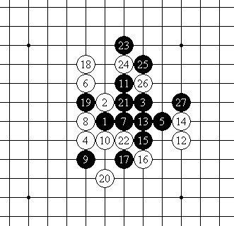

顾炜老师再次和小寒下的三盘棋评
#1 顾炜老师再次和小寒下的三盘棋评作者：偶是逆风独立 发表时间：2012-4-5 12:14:12
再次和小寒下的三盘棋评
作者：顾炜 转自百度连珠吧

第一盘棋还是我执黑布局“残月”。不晓得小寒同学是不是对“残月”执白极为有信心，依然固执地不交换执白应对。白4变通为名月变化，给出的另一个5-11。很不幸，这里的必胜点有好几个，于是小寒再次经历了一场毫无意义的防御。黑棋的进攻方法较多，取胜手段也并非实战一种。
第2盘是小寒布局，面对疏星，我选择执白看看对方究竟想下什么变化。另一个黑5-24。考虑到小寒是进攻型的选手，我导回老变化，黑11的选择比较平稳，不过一般黑15下在25比较多，实战的一手开始挑事。白16是比较积极的防御。黑17是必须的。此后黑白双方的应对还是比较正常的。问题是黑27、白28后，黑29为了迅速打开局面，抢夺先手，居然置白棋的局部简单杀于不顾。白30的胜法简单。
这也几乎是没有难度的一局，白棋基本是溃不成军的。黑棋的落子都包括了各种各样的反击手段，白棋毫无牵制的余地。
#2 Re:顾炜老师再次和小寒下的三盘棋评作者：釣鱼岛岛主 发表时间：2012-4-6 14:02:19
 寒姐
寒姐
#3 Re:顾炜老师再次和小寒下的三盘棋评作者：自来水 发表时间：2012-4-7 9:59:47
 观摩
观摩